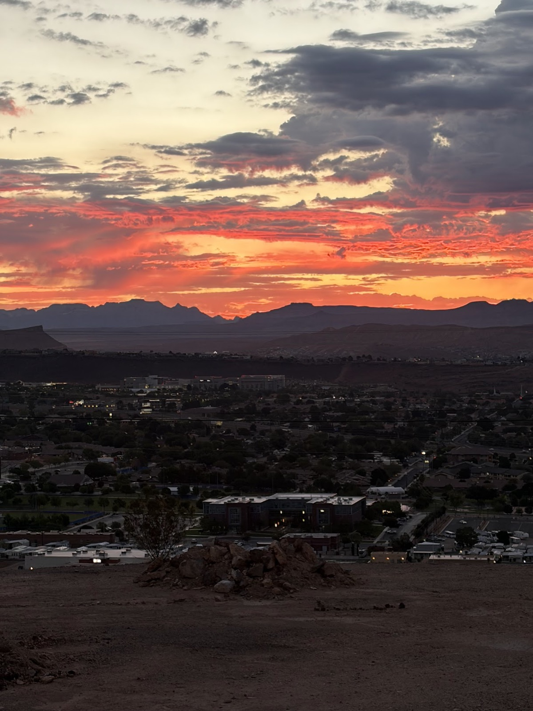
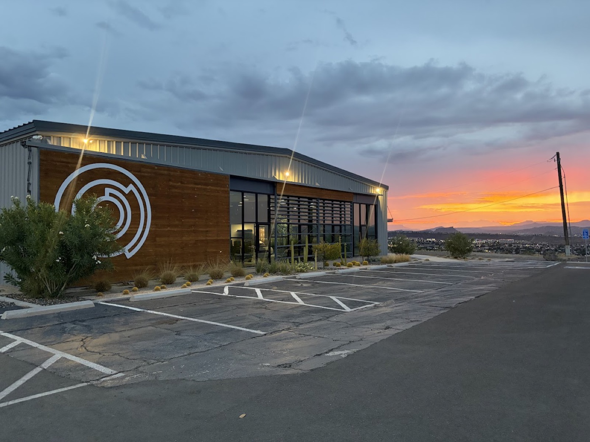
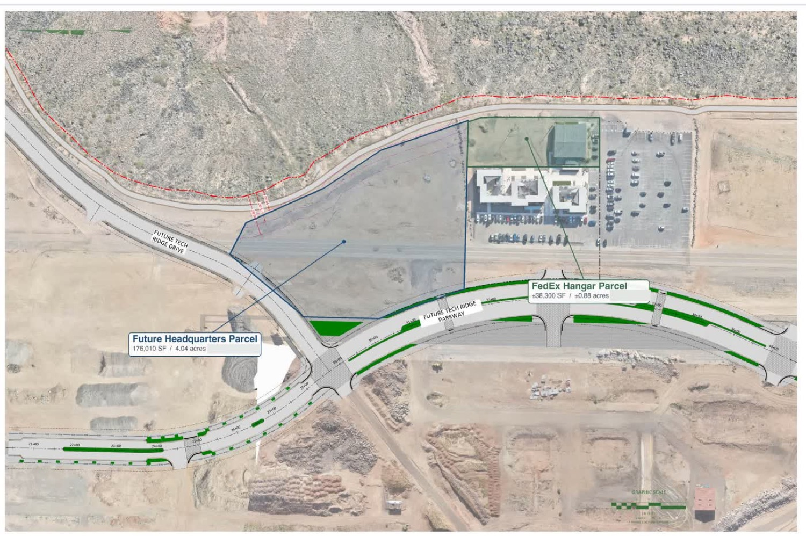
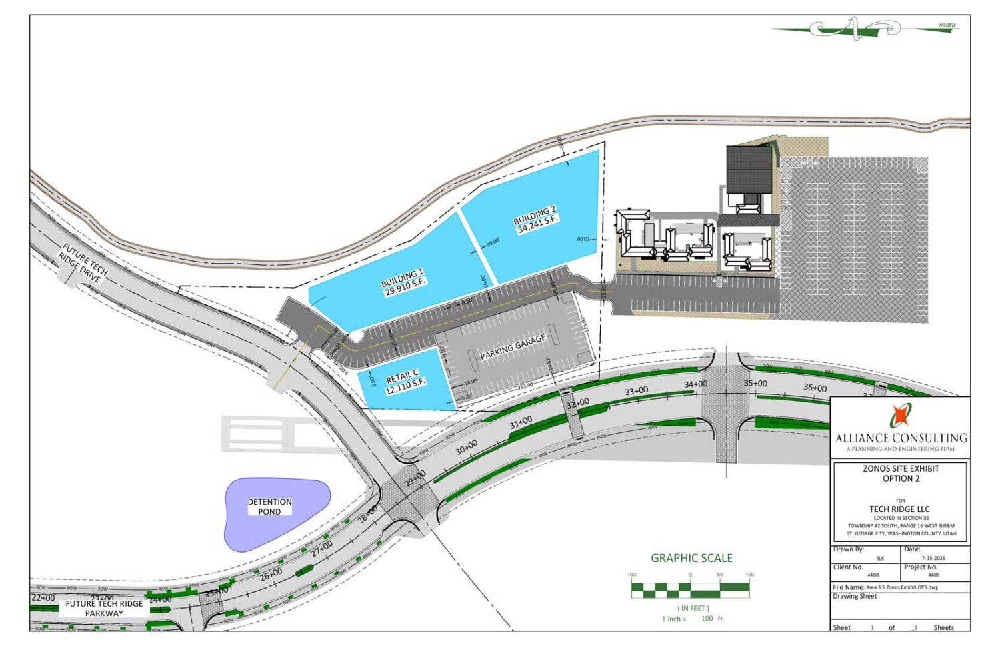
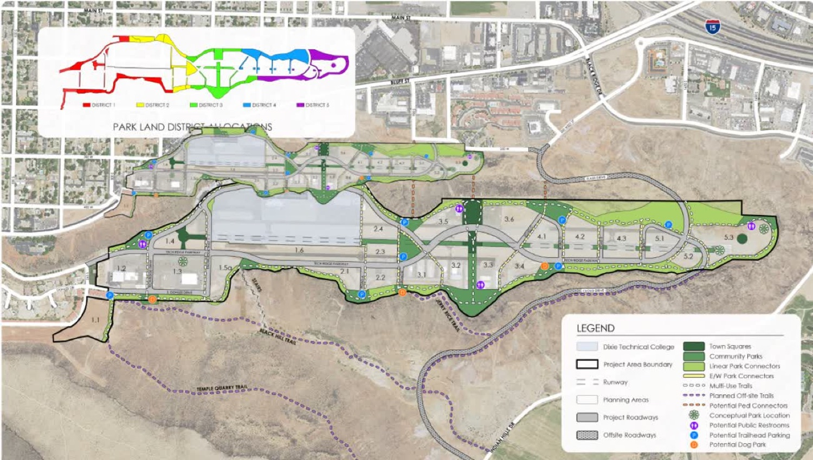

The site
The mesa rim
Just under five acres on the east rim of Tech Ridge, the mesa that used to be the St. George municipal airport. The parcel meets the public cliff trail directly; it is the only site on the ridge with no road between the building and the edge.
The ground
Site conditions
- Views in both directions. From the rim: the town below, Zion, Snow Canyon, Pine Valley Mountain. From the town: sightlines up to the building from almost anywhere in St. George. Whatever gets built is on display from both sides.
- Three approaches, no back. Cars arrive from the street, the trail and city meet the building along the rim, and foot traffic arrives where the new public stairs crest the mesa. Every side of the building must feel intentional.
- Height steps with distance from the edge. The zoning ladder runs roughly 20 ft near the rim, stepping up to 65 ft (and 85 ft in some areas) further back, with a 50 ft setback from the edge confirmed. The height ladder forces a terraced building. The terraces can become the design's main asset.
- One level down is the practical limit. The geology allows digging 10 to 15 feet with relative ease; below that sits a dissolved rock cap. That points to one below-grade parking level, not a deep basement.
- Sun and heat are the design problem. Around 300 dry days a year. South and west faces routinely pass 100 degrees, with 117 recorded. The east face gets afternoon shade from the building itself. Glare is a lived complaint in the current offices.
- Wind is real. Gusts above 60 mph have been recorded on the ridge. It constrains decks and doors, and it may be an opportunity for on-site generation.
- Water leaves the site. Storm water sheds into the ridge-wide drain system. A deliberate water feature stays possible; detention ponds do not need to eat the parcel.




The public edge
The stairs and the trail
A public staircase of 333 steps already climbs the ridge nearby, and it became a community fixture nobody predicted: 25 to 30 people a day on average, peaks near 175 at once, ages 3 to 83, run clubs and mom groups and an 80-year-old couple doing a daily loop. A second staircase is planned to land at the Zonos corner, connecting the rim trail down toward an active street below. A 5K rim trail is being graded now, running directly past the parcel.
The building's neighbors are not other offices; they are people climbing stairs at sunrise. The ideas about a reward at the top of the climb, a community sunrise event on the east decks, and treating the trail as workspace all come from this.

Around the parcel
The Tech Ridge master plan
The ridge is a master-planned district on the old airport: office-led, with housing, retail, and an adventure zone in planning. Context that shapes the campus thinking:
- Housing is coming. The first residential units are targeted for early 2028, with thousands more planned across the ridge over time. A meaningful share of the Zonos team wants to live where they work; that changes parking, commuting, and the hours the building is used.
- The activity zone is real. The stairs exist; a zipline, chairlift, downhill mountain bike park, and gravity cart track are in planning. The retail lean is active-lifestyle.
- An entertainment venue and a boutique hotel are under consideration nearby, and a small-format grocery near the residential crescent. Weekday-office parking and evening-venue parking complement each other.
- Phase two stays fluid on purpose. A second Zonos building of similar size comes 3 to 4 years later, with a courtyard between the two, and the first building is being planned so a future bridge between them stays possible.
The live development map
Tech Ridge keeps a live map of every parcel on the mesa: what is built, what is under construction, what starts within twelve months, and the Zonos site. It is embedded below and opens full screen at techridge-zonos.pages.dev.
The embed opens on the Zonos corner of the ridge. For the whole mesa, open the map full screen at the link above.
On video
Walking the campus, September 2026
A narrated walk through the campus as it stands today: the rooms the new building has to outdo, the courtyard between the containers, the hangar set up for all-hands, and the graded pad where the building goes. Recorded September 15, 2026.